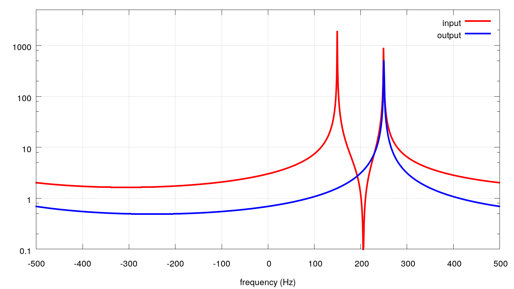

main menu
Example of the recursive filter use
We analyze synthetic signal consisting of two constant frequency components (150 and 250 Hz) before filtering (red) and after filtering (blue).

main menu